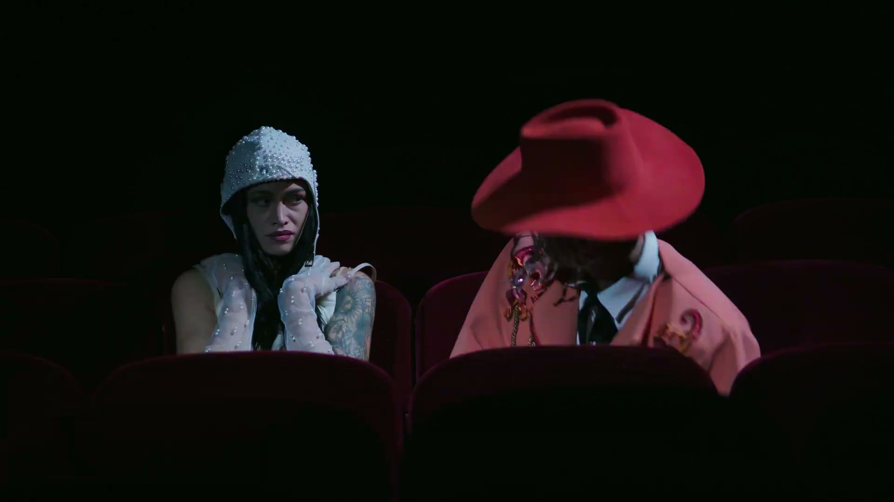

Dossier · 2026
Movement director
Quando il corpo parla, la storia ha inizio.
Italiano · Francese · Inglese
Direzione del movimento · Videoclip

Il lavoro
NORMAL
Videoclip ufficiale di Lucien Lumière
Produzione Maison Lumière
Regia Eli Chicheportiche
Direzione artistica Roman Veiga
Con Lucien Lumière e Sarah Okendo
Direzione del movimento per il rapper e l’attrice: la costruzione fisica della relazione, il ritmo dei corpi nella platea vuota di un teatro, la presenza davanti alla macchina da presa.
Radici
Tre radici, un solo corpo.
Danza
Cerimonia di apertura dei Giochi ParalimpiciInterprete
Coreografia Alexander Ekman
Direzione artistica Thomas Jolly
Place de la Concorde, Parigi 2024
Coloricocola · Brice KapelNagan Production · interprete
Assistente alla coreografia
Riallestito a Lexington, USA
Encore en corpsCompagnie Relief · Dominique Lisette
Interprete
Hermès, Valentino, Victoria’s SecretSfilate, eventi, video
Coreografia
Éteignons les écrans«Spegniamo gli schermi»Brice Kapel · Palais des Festivals, Cannes
4 danzatori, 3 circensi, 1 cantante,
2 coriste, 4 musicisti
INequalitySpettacolo dal vivo e cortometraggio
Compagnie Wected (fondatrice)
Amman Contemporary Dance Festival
Festival Onze Bouge, Parigi
NORMAL · Lucien LumièreVideoclip · Maison Lumière
Direzione del movimento
Comme Si · Lucien LumièreVideoclip · Maison Lumière
Coreografia
Recitazione
Les Rayons et les OmbresXavier Giannoli · Gaumont · 2026
Piccolo ruolo · Ragazza rasata
Cambiare l’acqua ai fiori«Changer l’eau des fleurs»Jean-Pierre Jeunet · 2026
Stand-in
Carmen · Compagnie CTBLProtagonista · 75 repliche
Actors Factory, ParigiScuola di recitazione
Formazione conAlexandra Reynolds e Tom Afiyan
Movement for Film · Londra
Ambiti di lavoroCinema e serie · Moda, sfilate e shooting
Fotografia · Videoclip · Pubblicità
attori, modelle e modelli, performer e cantanti
Sul set di JeunetStand-in di Anouk Grinberg in Cambiare l’acqua ai fiori di Jean-Pierre Jeunet: guardare da vicino come il regista costruisce le immagini.
Metodo
Il corpo sa
prima delle parole.
Una direzione del movimento che nasce dal corpo come primo linguaggio: un percorso su misura, fatto di fiducia, ascolto e trasformazione, per chi sta davanti alla macchina da presa o in scena.
Movement director, coreografa e performer, Gladia Marchetti fonda il suo lavoro su una convinzione: il corpo è più sincero delle parole. Il modo in cui una persona si muove, si ferma e abita lo spazio racconta tutto del suo mondo interiore.
Il suo approccio parte sempre da una relazione di fiducia con l’interprete: è quello spazio sicuro a rendere possibile tutto il resto. Con il regista il patto è lo stesso: lei lo ascolta, capisce dove vuole arrivare e traduce in movimento quello che ha in mente. Ogni progetto si costruisce su misura, con chi interpreta, con chi dirige e con la produzione: prima il confronto, poi la sala prove, e solo alla fine il set.
Per lei il movimento non è solo espressione o forma, ma uno strumento di rivelazione e metamorfosi, direttamente connesso alla mente e alle emozioni. Il suo ruolo è far emergere l’interprete: arrivare fin dove il progetto chiede, cambiare il peso, il ritmo e la postura di un corpo finché quel corpo non racconta qualcosa che prima non diceva, su un set, in scena, in una sfilata, davanti a un obiettivo.
Attinge alla sua esperienza di danzatrice, coreografa e attrice per portare chi ha davanti più a fondo nel ruolo, con tutto il corpo, al cinema come nello spettacolo dal vivo.
Nelle sue parole
Il mio lavoro comincia sempre da una relazione di fiducia. Creo uno spazio sicuro, dove chi ho davanti può lasciarsi andare e uscire dalla propria zona di comfort senza paura di sbagliare.
Da lì si apre tutto il resto: il corpo si scalda, il respiro si libera, e piano piano arriva la trasformazione, quella vera, non recitata.
Danza, coreografia, recitazione: sono le mie radici, e porto tutto questo in ogni corpo che accompagno, dentro e fuori dal set. È quella trasformazione nell’interprete che voglio continuare a cercare.
Gladia Marchetti
Di che corpo
ha bisogno
la tua visione?